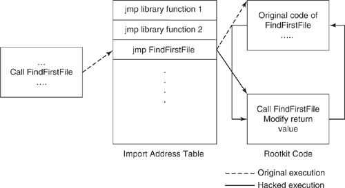

IAT hooking
IAT (Import Address Table) Hooking:
Windows executables do not contain the entire code that would allow them to execute as a process independently. Instead, to reduce the size of executables and improve performance, code that is commonly used is shared among different processes using DLL files. During compilation, a stub code is generated for all the API calls that are imported from the shared DLL files. These stub functions are located in a section of the process code identified as the
import address table (IAT).
Technique applied by modifying the IAT table of the executable by replacing the address of the hooked function with a pointer to the rootkit code ;
